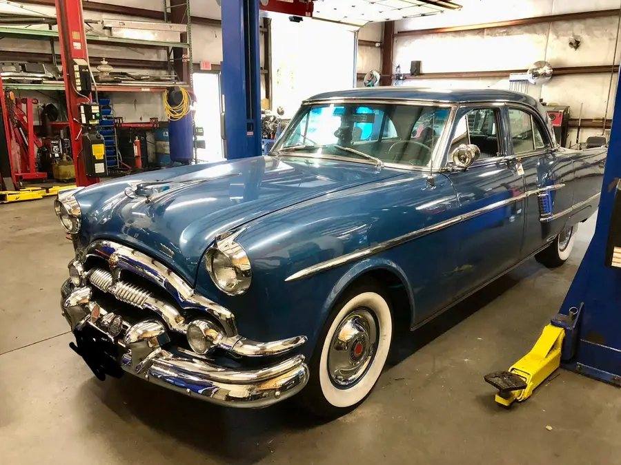
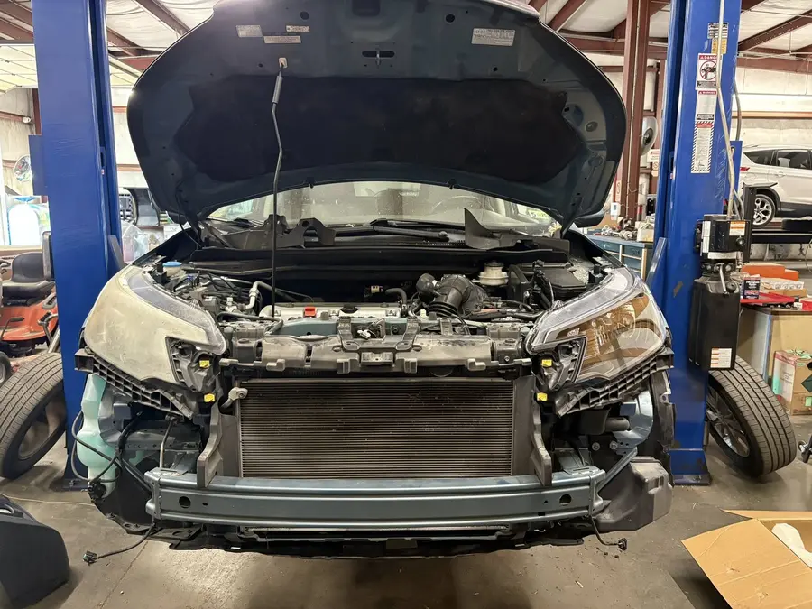
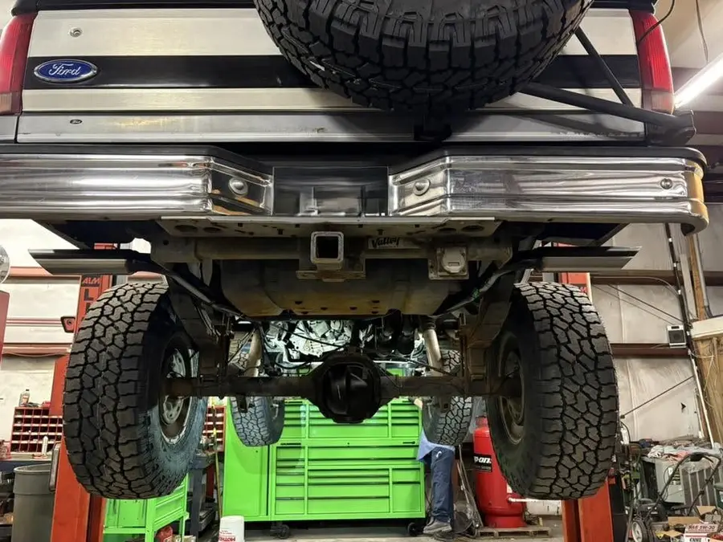
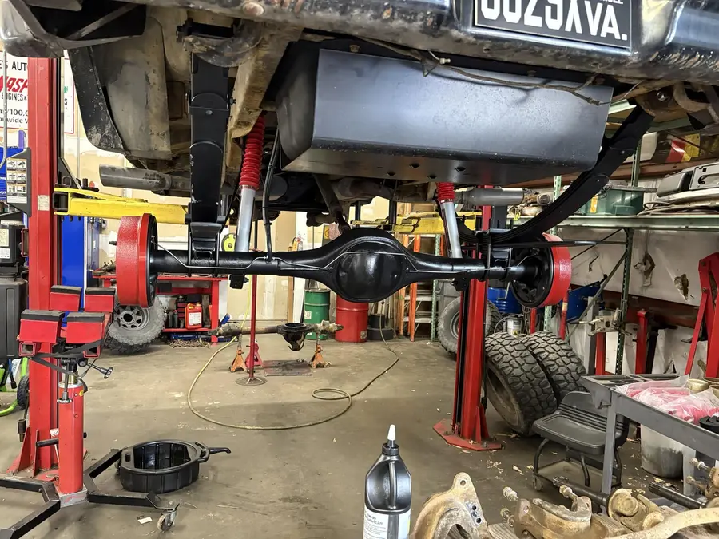
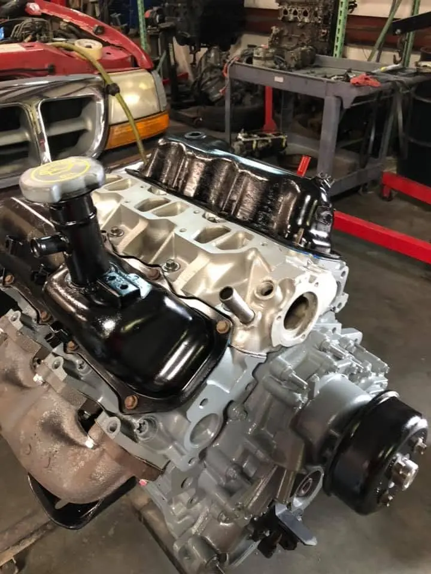
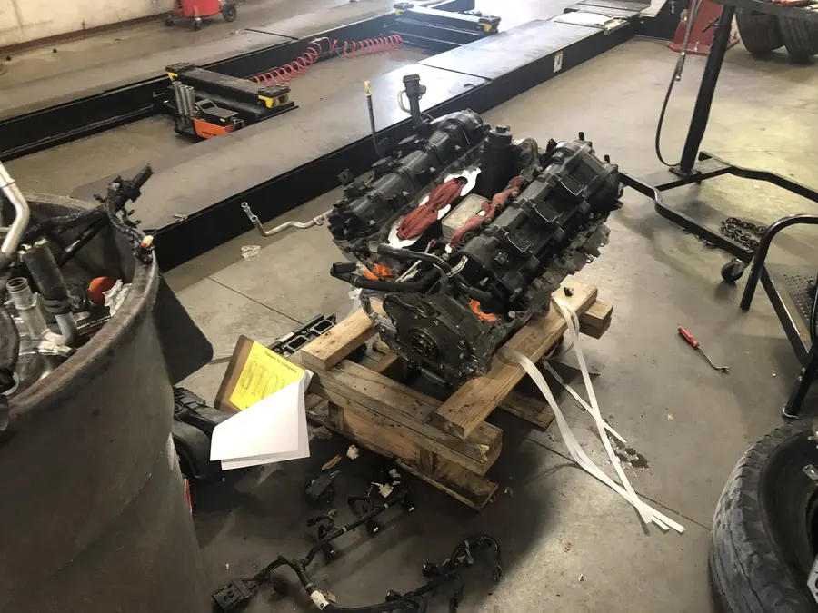

Auto Repair in Chesapeake, VA
Family owned and operated. Serving customers since 2004.
4.8 94 Google reviews See them on GoogleFull Service Auto Repair in Chesapeake, VA
From state inspections to engine replacements, on a wide variety of vehicles.
Full Service Repair
One shop for the repairs your vehicle needs.
State Inspections
Get your inspection done at the same shop that fixes it.
Engine Replacement
Engine replacement is part of the work we do.
A Wide Variety of Vehicles
Call with the year, make and model.
Chesapeake Drivers Rate Us
Family owned and operated since 2004. Read what customers say about the shop.
Read the Google reviewsInside the Chesapeake Auto Repair Shop
Real vehicles on the lifts at White's.






Family Owned and Operated. Serving Chesapeake Since 2004.
A Family Shop in Greenbrier
White's Automotive Repair is family owned and operated. We have been serving customers since 2004.
You can find us at 941 Corporate Ln # B in the Greenbrier industrial area of Chesapeake. Call first and tell us what is going on with your vehicle.
Questions Chesapeake Drivers Ask
Do you do state inspections?
Yes. State inspections are part of our full service repair. Call (757) 410-7680 to ask about your vehicle.
Do you replace engines?
Yes. Our work runs from state inspections to engine replacements. Call (757) 410-7680 to talk through your vehicle.
What kinds of vehicles do you work on?
A wide variety of vehicles. Call (757) 410-7680 with the year, make and model and we will tell you if we can help.
How long has White's Automotive Repair been in business?
We are family owned and operated, and we have been serving customers since 2004.
Where is the shop?
941 Corporate Ln # B, Chesapeake, VA 23320, in the Greenbrier industrial area.